Empire Stone × Empire Granite — QA
ชุดทดสอบ BOQ — กรณีพิเศษและเคสผิดพลาด
อัปเดตล่าสุด: 3 พฤศจิกายน 2569 (2026-11-03) · รันจริงบน eg-tst ผ่านหน้าจอ ใช้ผู้ใช้ emgdemo บริษัท Empire Granite
เคสที่ Golden Path ทั้ง 5 เส้นทางไม่ได้ทดสอบ (เพราะเดินเฉพาะทางที่ถูก): ไฟล์นำเข้าผิด · Cut List ผิด · เศษหินหลังตัด · ส่งและวางบิลบางส่วน · ลูกค้าคืนของ · ทุกเคสเดินจริงและตัวเลขมาจากระบบ
ประเด็นที่ต้องการการยืนยัน (ผู้จัดทำตัดสินใจแทนไปก่อน โปรดยืนยันหรือแจ้งให้ปรับ)
- ค่าบริหารโครงการเรียกเก็บเต็มจำนวนในใบแจ้งหนี้ใบแรกของการส่งบางส่วน — ใบแรก 46,699.20 = หิน 40,608.00 (ที่ส่งแล้ว) + ค่าบริหารโครงการ 6,091.20 ทั้งก้อน ใบที่สองมีแต่หิน แก้แล้วในโมดูล BOQ 1.54.4 ให้เรียกเก็บตามสัดส่วนมูลค่าที่ส่ง (ตรวจซ้ำแล้วใน TC-EX2-09 ชุดที่ 2) ผลในเคสนี้เป็นของก่อนแก้
- FG หนึ่ง lot ส่งแบ่งเป็นชิ้นเต็มได้ — แก้แล้ว (โมดูล 109.69) ตามที่ลูกค้าแจ้งว่าของจริงแบ่งส่งได้ ต้องเป็นจำนวนเต็มของชิ้น เช่น 3 ชิ้น = 2.16 ตร.ม. ตรวจซ้ำใน TC-EX-10 ขอให้ลูกค้ายืนยันว่าแบ่งเป็นชิ้นถูกต้อง (หินแผ่นเดียวยังส่งทั้งแผ่น)
- ใบคืนของ FG เข้า EG01/Stock ตรง ไม่ผ่านการตรวจ — Slab คืนต้องผ่าน Returned - Inspect แต่ FG คืนเข้าสต็อกขายได้ทันที ขอยืนยันว่าไม่ต้องการให้ตรวจสภาพก่อน
- การคืนของไม่ออก Credit Note ให้เอง — ต้องกด Credit Note ที่ใบแจ้งหนี้แยก (TC-EX-16) ขอยืนยันว่ารับได้
- ต้นทุนเศษคิดตามพื้นที่ — 1.50 ตร.ม. จาก 8.70 ตร.ม. ได้ 1,405.02 จากต้นทุน Slab 8,149.12 ไม่ได้ถ่วงตามรูปร่างหรือความเสียหาย
16Test Case ทั้งหมด
5หมวด
12High Priority
4Medium Priority
0Low Priority
ชุดนี้ใช้คู่กับ Golden Path เส้นทางที่ 1–5
- ใช้ตรวจเรื่องที่เส้นทางหลักข้ามไป · เส้นทางหลักดู เส้นทาง 1 · เส้นทาง 2 · เส้นทาง 3 · เส้นทาง 4 · เส้นทาง 5
- ไฟล์ตัวอย่างที่ผิดโดยตั้งใจอยู่ในหน้า ไฟล์ทดสอบ BOQ (4 ไฟล์) · ต้องผ่าน Setup ระบบ มาก่อน และมี Slab ZZ2 GUIDE MARBLE ที่ Available อย่างน้อย 5 แผ่น
- ขอบเขต 16 เคส: นำเข้า BOQ ผิด 3 · Cut List ผิด 2 · เศษหิน 4 · ส่งและวางบิลบางส่วน 5 · ลูกค้าคืนของ 2
A. นำเข้า BOQ จาก Excel ผิด
ระบบต้องหยุดและบอกว่าผิดตรงไหน ไม่สร้าง BOQ ครึ่งๆ กลางๆ · 3 test cases
| TC ID | Scenario | Precondition | Steps | ข้อมูลตัวอย่าง | Expected Result | Priority | ภาพหน้าจอ |
|---|---|---|---|---|---|---|---|
| TC-EX-01 | กดอ่านไฟล์โดยยังไม่ได้เลือกไฟล์ ต้องเลือกลูกค้าก่อน ปุ่มดาวน์โหลดเทมเพลตจึงทำงาน แต่ปุ่ม อ่านไฟล์ ไม่เช็คลูกค้า เช็คแค่ว่ามีไฟล์ |
เข้าระบบเป็น Empire Granite |
|
ลูกค้า Demo Hotel Customer · ไม่มีไฟล์ | ขึ้นหน้าต่าง Invalid Operation ข้อความ กรุณาเลือกไฟล์ (.xlsx) ก่อน · กด Close แล้วกลับมาที่หน้าต่าง Import Excel เดิม ไม่มี BOQ ใหม่ | Medium | 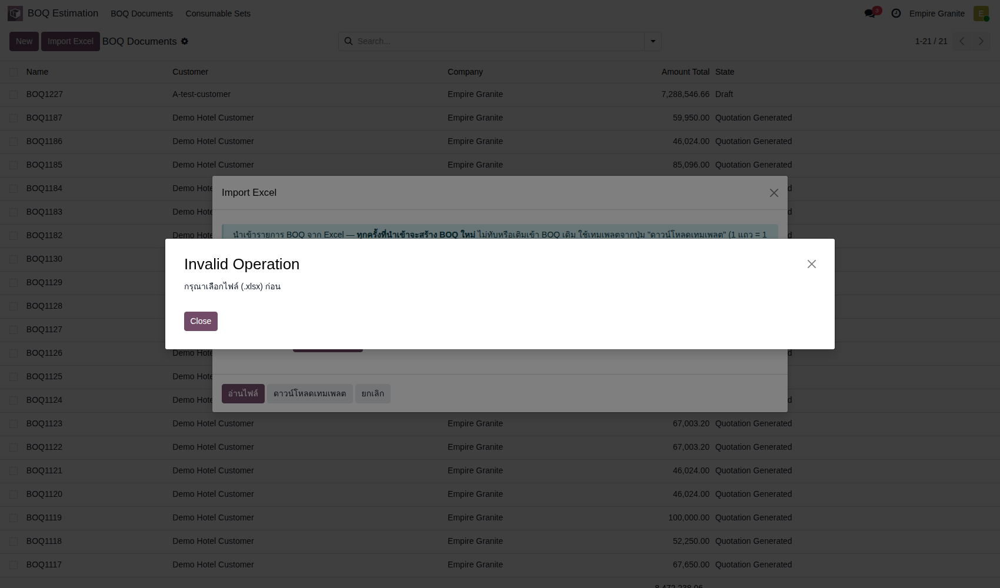 |
| TC-EX-02 | ไฟล์ไม่มีแถวหัวตาราง (ไม่ใช่เทมเพลต) ระบบหาแถวหัวตารางจากคำว่า รายการ ถ้าไฟล์ถูกลบหัวตารางทิ้งหรือไม่ใช่เทมเพลตของระบบจะอ่านไม่ได้ · แก้ด้วยการดาวน์โหลดเทมเพลตใหม่แล้วคัดลอกข้อมูลไปวาง |
ไฟล์ boq-import-zz2-no-header.xlsx (เทมเพลตที่ลบแถวหัวตารางทิ้ง) |
|
ไฟล์เทมเพลตที่แถวที่ 4 (หัวตาราง) ว่างเปล่า | ขึ้น Invalid Operation: ไม่พบแถวหัวตาราง (ต้องมีคอลัมน์ รายการ) — ใช้เทมเพลตจากปุ่ม ดาวน์โหลดเทมเพลต · ยังอยู่ในหน้าต่างเดิม ไม่มีหน้าตัวอย่าง | Medium | 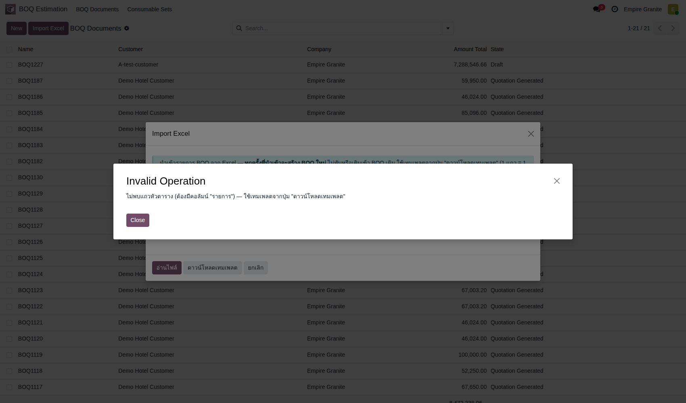 |
| TC-EX-03 | ไฟล์มีแถวผิดหลายแบบ — ระบบแสดงแถวแดงและไม่ให้สร้าง BOQ ระบบตรวจทุกแถวแล้วรายงานรวมครั้งเดียว แก้ไฟล์แล้วกด กลับไปเลือกไฟล์ ไม่มีปุ่มสร้าง BOQ ให้กดข้ามได้ · ตัวเลขสรุปด้านบนยังคำนวณจากแถวที่อ่านได้ ห้ามใช้เป็นยอดจริง |
ไฟล์ boq-import-zz2-errors.xlsx (5 แถว ผิดคนละแบบ) |
|
แถว 5: พื้นไม่ใส่ขนาด · แถว 6: ยาว = หนึ่งร้อยยี่สิบ (ข้อความ) · แถว 7: ชื่อสินค้าที่ไม่มีในระบบ · แถว 8: หน่วย เที่ยว · แถว 9: ไม่มีชื่อรายการ | แถบแดง มี 5 แถวที่มีข้อผิดพลาด · แถว 5 FG แผ่นตัดต้องระบุขนาด ขาด กว้าง ยาว · แถว 6 ยาว ต้องเป็นตัวเลข (พบ หนึ่งร้อยยี่สิบ) · แถว 7 ไม่พบสินค้าหิน ZZ หินที่ไม่มีอยู่จริง ในระบบ · แถว 8 ไม่รู้จักหน่วย เที่ยว (ใช้ ตร.ม. / ชิ้น / ม.) · แถว 9 ไม่มีชื่อรายการ · เหลือปุ่ม กลับไปเลือกไฟล์ และ ยกเลิก เท่านั้น ไม่มีปุ่มสร้าง BOQ | High | 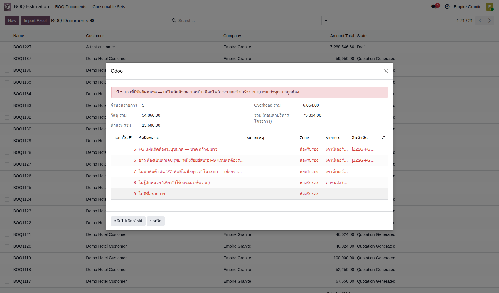 |
B. Cut List ผิด
ไฟล์ Cut List ที่อ่านไม่ได้หรือโซนไม่ตรง ต้องไม่แตะใบเสนอราคา · 2 test cases
| TC ID | Scenario | Precondition | Steps | ข้อมูลตัวอย่าง | Expected Result | Priority | ภาพหน้าจอ |
|---|---|---|---|---|---|---|---|
| TC-EX-04 | หัวตารางของเทมเพลต Cut List ถูกเขียนทับ หัวตารางอยู่แถวที่ 5 ของแผ่น Cut List ห้ามพิมพ์ทับ ข้อมูลเริ่มแถวที่ 6 (ตรงกับข้อควรรู้ในคู่มือเส้นทาง 5) |
BOQ ที่ออกใบเสนอราคาแล้ว (รอบทดสอบ BOQ1228 / S01806) · ไฟล์ cutlist-header-overwritten-zz2.xlsx · เลือกสินค้า ZZ2G-FG ที่แท็บ ③ Cut List แล้ว |
|
แถวที่ 5 ของไฟล์เป็นข้อมูลชิ้นแรก (ห้องประชุม · M1) แทนหัวตาราง | Invalid Operation: ไม่พบข้อมูลที่จดจำได้ในไฟล์นี้ — ตรวจสอบว่าเป็น Cut List ที่มีคอลัมน์ จำนวนตรม. อยู่จริง · BOQ ไม่เปลี่ยน (ชิ้นงานที่นำเข้าแล้ว 0 · Amount Total 46,024.00) | High | 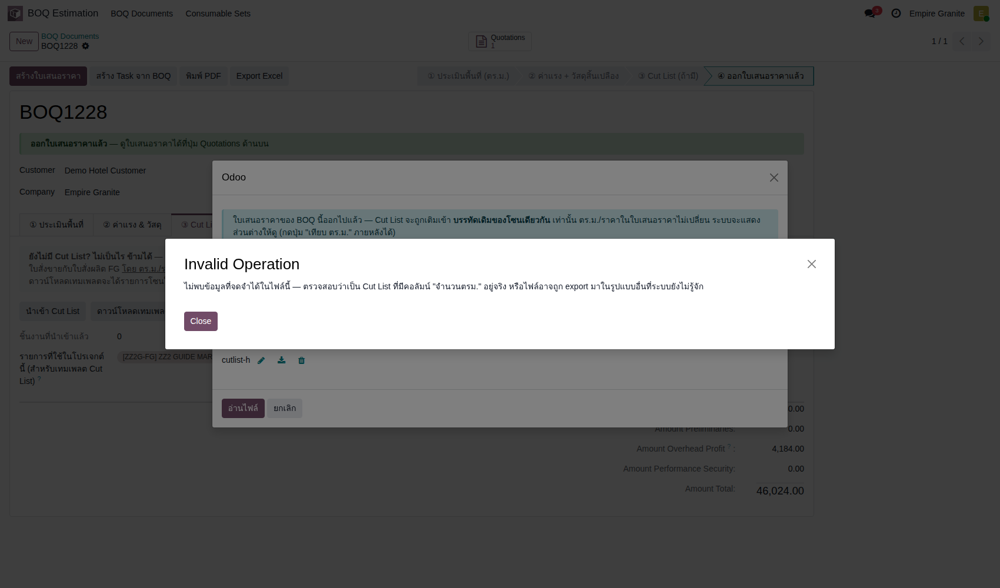 |
| TC-EX-05 | โซนใน Cut List ไม่มีใน BOQ ที่ขายไปแล้ว หลังออกใบเสนอราคา Cut List เติมได้เฉพาะบรรทัดเดิมของโซนเดียวกัน ถ้าชื่อโซนไม่ตรงต้องแก้ชื่อโซนในไฟล์หรือในตารางตรวจทานก่อนยืนยัน · หน้าตัวอย่างไม่ห้าม แต่ปุ่มยืนยันนำเข้าจะหยุด |
เหมือนเคสก่อน · ไฟล์ cutlist-wrong-zone-zz2.xlsx (ทุกชิ้นอยู่ในโซน ห้องนอน ซึ่ง BOQ ไม่มี) |
|
Cut List 18 ชิ้นในโซน ห้องนอน (13.068 ตร.ม.) · BOQ มีโซน ห้องรับรอง เท่านั้น | ตารางตรวจทาน: โซน ห้องนอน 18 แถว 13.0680 ตร.ม. ตร.ม. ที่ประเมิน 0.00 ผลจับคู่ ไม่พบบรรทัด… · กดยืนยันนำเข้าแล้วขึ้น Invalid Operation: ไม่พบบรรทัดเดิมในโซนเดียวกันกับ Cut List — ตรวจชื่อโซนในตาราง (ต้องตรงกับโซนใน BOQ) · ไม่มีบรรทัดหรือชิ้นงานเพิ่ม | High | 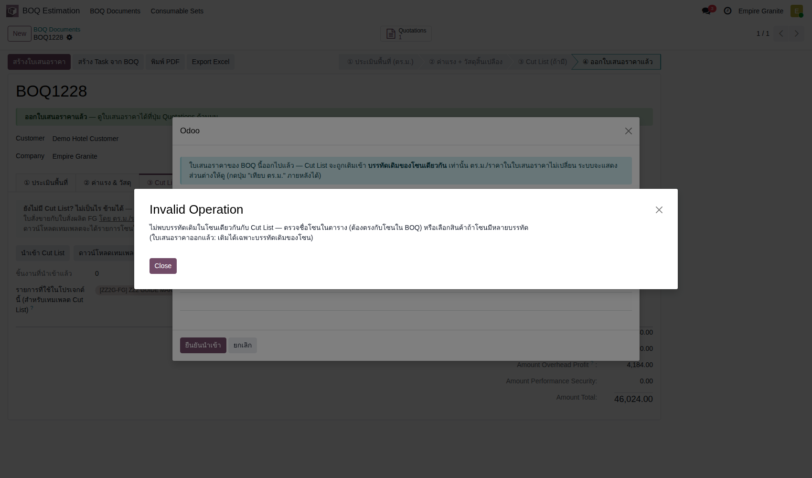 |
C. เศษหินหลังตัด (Offcut)
ใบสั่งผลิตบันทึกเศษที่เหลือ → ต้นทุนแยกออกจาก FG → ตรวจเศษแล้วกลับเข้าสต็อก · 4 test cases
| TC ID | Scenario | Precondition | Steps | ข้อมูลตัวอย่าง | Expected Result | Priority | ภาพหน้าจอ |
|---|---|---|---|---|---|---|---|
| TC-EX-06 | บันทึกเศษที่เหลือที่ใบสั่งผลิตก่อนกดผลิตเสร็จ เศษบันทึกได้ถึงก่อนกด ผลิต FG เสร็จ (หลังเสร็จแก้ไม่ได้) · ขนาดกรอกเป็นเมตร เหมือนหน้าจอโรงงานอื่น · ช่อง From Slab เว้นว่างได้ ระบบใช้ Slab แรกในรายการ |
ยืนยันใบเสนอราคาจาก BOQ ที่นำเข้าด้วยไฟล์ boq-import-zz2-reception.xlsx (7.2 ตร.ม.) แล้ว เปิดใบสั่งผลิต กด ย้ายไปสถานีตัด และ Confirm แล้ว (Slab 2 แผ่น 8.70 ตร.ม.) |
|
รอบทดสอบ MO EG01/STFG/00491 · เศษ 1.50 × 1.00 ม. × 1 ชิ้น (Slab ใช้ 7.92 จาก 8.70 ตร.ม.) | แถวเศษขึ้น กว้าง 1.500 ยาว 1.000 จำนวนชิ้น 1.000 ตร.ม. 1.50 · ช่องต้นทุนและ Offcut Lots ยังว่าง (0.00) จนกว่างานจะเสร็จ | High | 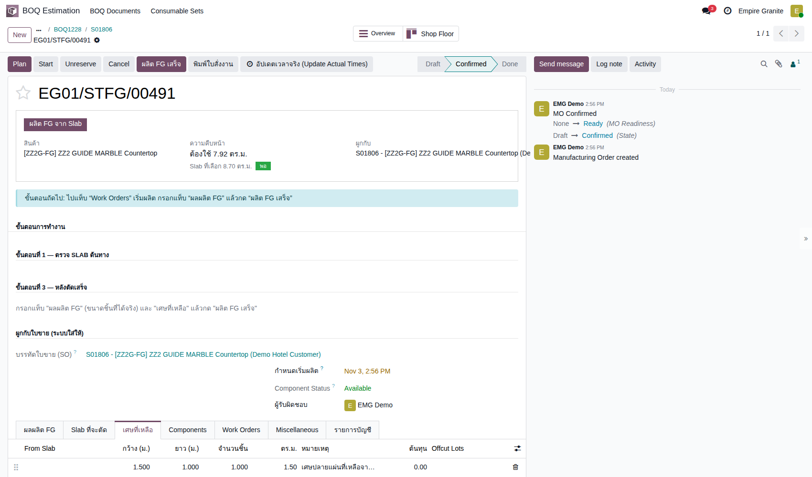 |
| TC-EX-07 | ผลิต FG เสร็จ แล้วเศษกลายเป็น Slab ใหม่พร้อมต้นทุนส่วนของมัน ต้นทุนเศษ = ต้นทุน Slab ที่ใช้ตัด × พื้นที่เศษ ÷ พื้นที่ Slab ทั้งหมด (คิดตามพื้นที่) ส่วนนี้ออกจากต้นทุน FG |
ทำ TC-EX-06 เสร็จแล้ว |
|
- | สถานะ Done · แท็บ เศษที่เหลือ: ต้นทุน 1,405.02 · Offcut Lots OC-EG01/STFG/00491-01 (ชื่อตามเลขใบสั่งผลิต ต่อท้ายลำดับ) | High | 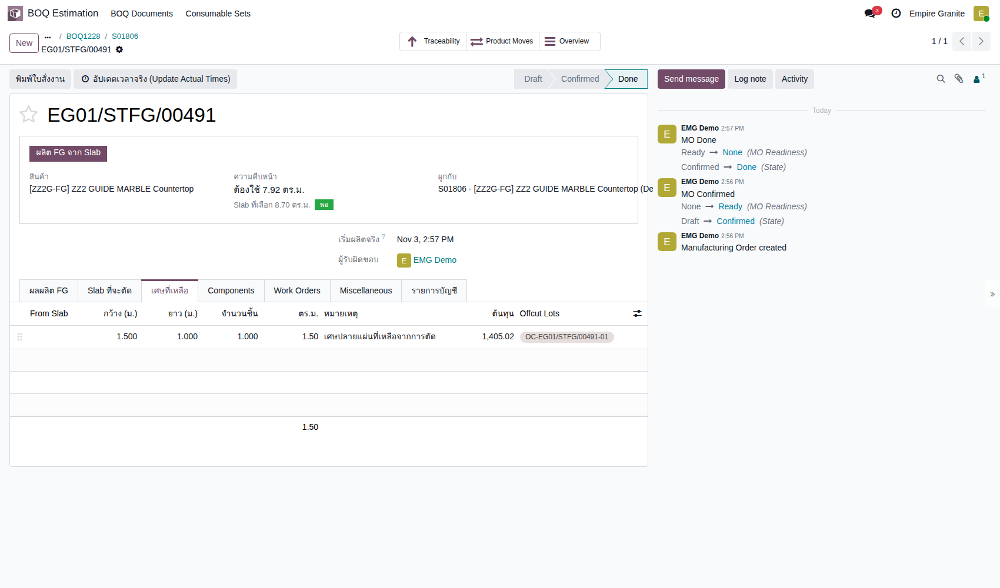 |
| TC-EX-08 | ตรวจรายการบัญชีว่าต้นทุน FG ลดลงเท่าเศษ ต้นทุน Slab ที่ลงใน FG ของงานนี้ไม่ใช่ 8,149.12 เหมือนเส้นทาง 1 (ที่ไม่มีเศษ) แต่ 8,149.12 − 1,405.02 = 6,744.10 · ค่าแรงผลิตไม่เปลี่ยน |
ทำ TC-EX-07 เสร็จแล้ว |
|
- | 3 รายการ Posted: Inventory Valuation 8,149.12 (ต้นทุน Slab ที่ตัดออกจากสต็อก) · Inventory Valuation 6,744.10 (ต้นทุนที่เข้า FG) · FG Production Labor 10,800.00 · รวม 25,693.22 · ผลต่าง 1,405.02 คือต้นทุนที่ไปอยู่กับเศษ | High | 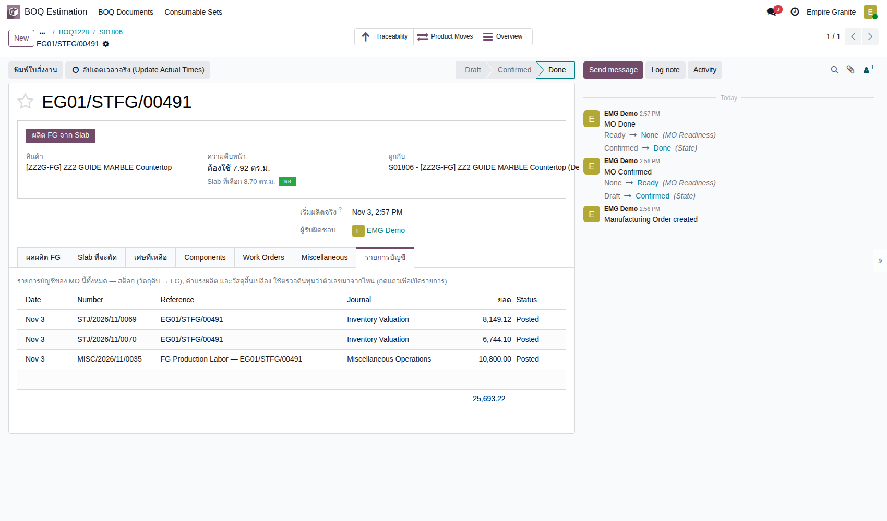 |
| TC-EX-09 | ตรวจเศษที่ Slabs Pending Inspection แล้วนำกลับไปขาย เศษเข้า Location Returned - Inspect ก่อน ต้องมีคนตรวจ ถ้าชำรุดกด ชำรุด — ตัดทิ้ง (Scrap) ได้ที่ฟอร์มเดียวกัน (เคสนี้ไม่ได้ทดสอบ) · ต้องเลือกแถวให้ตรงเลข lot ของงานนี้ เพราะรายการรวมเศษของงานเก่าด้วย |
ทำ TC-EX-07 เสร็จแล้ว |
|
OC-EG01/STFG/00491-01 · 1.500 × 1.000 × 0.030 ม. · ต้นทุน 1,405.02 | ก่อนกด: สถานะ Returned - Pending Inspection ที่เก็บ Returned - Inspect · หลังกด: สถานะ Available ที่เก็บ Stone Inventory/Stone Available ขนาด 1.500 × 1.000 × 0.030 ราคาขาย 3,750.00 บาท/ตร.ม. ต้นทุน 1,405.02 · ปุ่มตรวจหายไป | Medium | 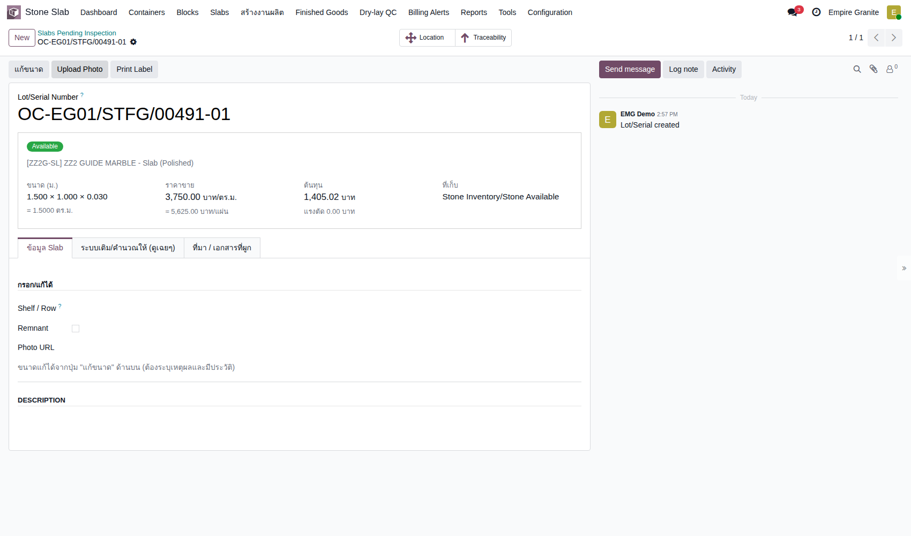 |
D. ส่งของและวางบิลบางส่วน
FG ส่งแบ่งเป็นชิ้นเต็มได้ · ส่งทีละบรรทัดโดยมีใบค้างส่ง · ใบแจ้งหนี้ตามที่ส่งจริง · 5 test cases
| TC ID | Scenario | Precondition | Steps | ข้อมูลตัวอย่าง | Expected Result | Priority | ภาพหน้าจอ |
|---|---|---|---|---|---|---|---|
| TC-EX-10 | ส่ง FG ของ lot เดียวเป็นบางชิ้น (แบ่ง lot ส่ง) FG หนึ่ง lot มีหลายชิ้นขนาดเท่ากัน (7.200 ตร.ม. = 10 ชิ้น × 0.72) ส่งได้เป็นชิ้นเต็มเท่านั้น ใส่จำนวนที่ไม่ลงตัวกับชิ้นระบบไม่ให้ผ่าน · รอบแรกของเคสนี้ (บนโมดูลก่อน 109.69) ระบบห้ามแบ่งส่ง lot เลย ซึ่งไม่ตรงกับหน้างานจริง ลูกค้าแจ้งว่าส่งของจริงมีแบ่ง lot จึงแก้เป็นกติกานี้ · หินแผ่นเดียว (Slab) ยังต้องส่งทั้งแผ่น |
ใบสั่งขาย S02047 (BOQ1359 เคาน์เตอร์ห้องรับรอง 7.200 ตร.ม.) ผลิตเสร็จ ได้ lot FG-EG01/STFG/00570-01 10 ชิ้น · ใบส่งของ EG01/OUT/00898 สถานะ Ready |
|
ส่ง 3 ชิ้น = 2.16 ตร.ม. จาก 7.20 · ใบค้างส่งเหลือ 5.04 (7 ชิ้น) | ใส่ 2.00: Validation Error หิน Lot FG-EG01/STFG/00570-01 ส่งได้เป็นชิ้นเต็มเท่านั้น (ชิ้นละ 0.7200 ตร.ม. คงเหลือ 7.20) แต่ใส่ 2.00 · ใส่ 2.16: EG01/OUT/00898 เป็น Done 2.160 และเกิดใบค้างส่ง EG01/OUT/00899 (5.04) · INV/2026/00028 Posted: เคาน์เตอร์ 2.160 × 4,700.00 = 10,152.00 · ค่าบริหารโครงการ 0.300 × 4,184.00 = 1,255.20 (ตามสัดส่วนที่ส่ง 2.16/7.20) · ค่าใช้จ่ายส่วนเพิ่มของห้อง 8,000.00 · ก่อน VAT 19,407.20 | High | 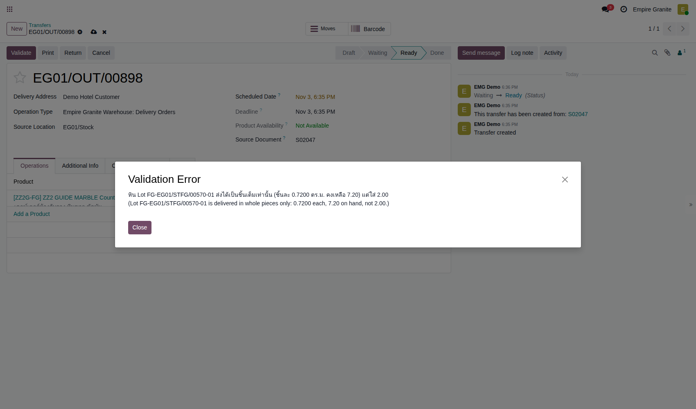 |
| TC-EX-11 | ส่งของบรรทัดแรกก่อน แล้วสร้างใบค้างส่ง (Backorder) ใช้ใบสั่งขายที่มี 2 บรรทัด (ห้องประชุม 8.64 · ห้องน้ำ 4.32 ตร.ม.) เพราะแต่ละบรรทัดมี FG คนละ lot · ตั้ง Quantity ของบรรทัดที่ยังไม่ส่งเป็น 0 |
BOQ1231 / S01809 ยืนยันแล้ว ผลิต FG ทั้งสองใบเสร็จ (EG01/STFG/00492 และ 00493) · ใบส่งของ EG01/OUT/00776 มี 2 บรรทัด Ready |
|
บรรทัด 1 ส่ง 8.640 · บรรทัด 2 ส่ง 0 (จาก 4.320) | หน้าต่าง Create Backorder? ขึ้น (ส่งน้อยกว่าที่สั่ง) · หลังกด Create Backorder ใบ EG01/OUT/00776 เป็น Done จำนวน 8.640 ตร.ม. เท่านั้น · เกิดใบใหม่ EG01/OUT/00777 อ้างอิง Back Order of EG01/OUT/00776 สถานะ Ready จำนวน 4.320 | High | 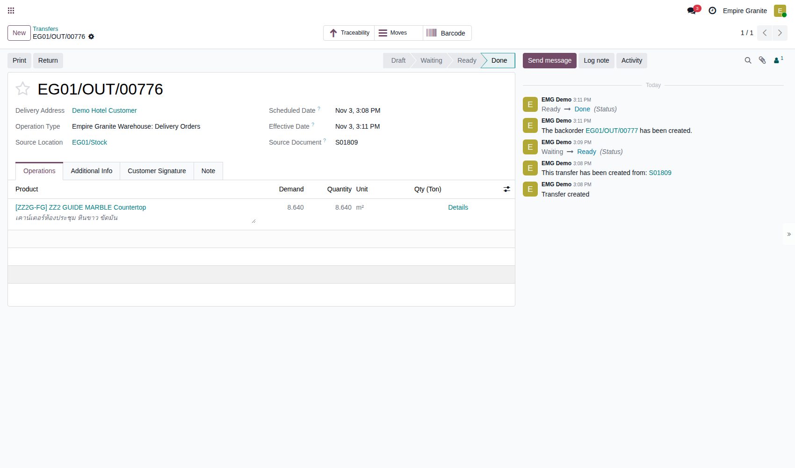 |
| TC-EX-12 | ออกใบแจ้งหนี้ตามที่ส่งแล้ว บรรทัดหินคิดตามจำนวนที่ส่งจริง (8.640) ส่วนบรรทัดค่าบริหารโครงการ (บริการ) ถูกเรียกเก็บเต็มจำนวนทันทีในใบแรก ไม่ถูกแบ่งตามสัดส่วนการส่ง · ผลนี้เป็นของก่อนแก้ (โมดูล BOQ 1.54.3) ตั้งแต่ 1.54.4 ระบบเรียกเก็บค่าบริหารตามสัดส่วนมูลค่าที่ส่ง (ดู TC-EX2-09 ในชุดที่ 2) ภาพและตัวเลขของเคสนี้ยังเป็นของก่อนแก้ |
ทำ TC-EX-11 เสร็จแล้ว |
|
- | ก่อนออกใบ: ห้องประชุม ส่ง 8.640 · ห้องน้ำ ส่ง 0.000 · ใบแจ้งหนี้ INV/2026/00021 Posted: ห้องประชุม 8.640 × 4,700.00 = 40,608.00 · ค่าบริหารโครงการ 6,091.20 · ก่อน VAT 46,699.20 · VAT 3,268.94 · รวม 49,968.14 · ไม่มีบรรทัดห้องน้ำ | High | 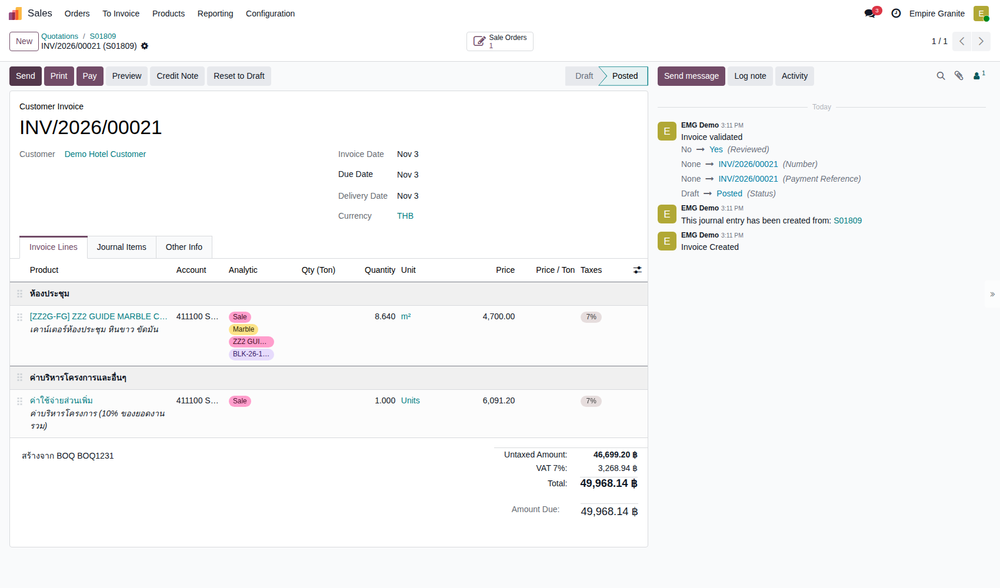 |
| TC-EX-13 | ส่งของที่ค้าง แล้วออกใบแจ้งหนี้ส่วนที่เหลือ ยอดสองใบรวมต้องเท่าใบเสนอราคา: 46,699.20 + 20,304.00 = 67,003.20 ก่อน VAT |
ทำ TC-EX-12 เสร็จแล้ว |
|
- | OUT/00777 เป็น Done 4.320 ตร.ม. (ไม่มีหน้าต่าง Backorder เพราะส่งครบ) · ใบแจ้งหนี้ INV/2026/00022 Posted: ห้องน้ำ 4.320 × 4,700.00 = 20,304.00 · VAT 1,421.28 · รวม 21,725.28 · ไม่มีบรรทัดค่าบริหารโครงการซ้ำ | High | 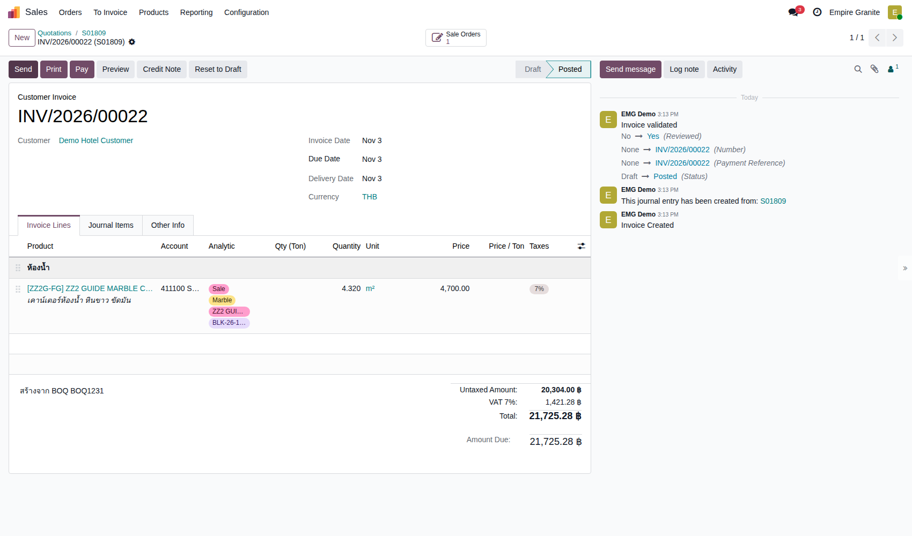 |
| TC-EX-14 | ตรวจใบสั่งขายหลังส่งและวางบิลครบ ยอดรวมสองใบ VAT 3,268.94 + 1,421.28 = 4,690.22 เท่ากับ 7% ของ 67,003.20 |
ทำ TC-EX-13 เสร็จแล้ว |
|
- | ปุ่มสมาร์ท Delivery 2 · Invoices 2 · ทุกบรรทัด Delivered และ Invoiced เท่าจำนวนที่สั่ง · ไม่มีบรรทัดที่ยังรอวางบิล | Medium | 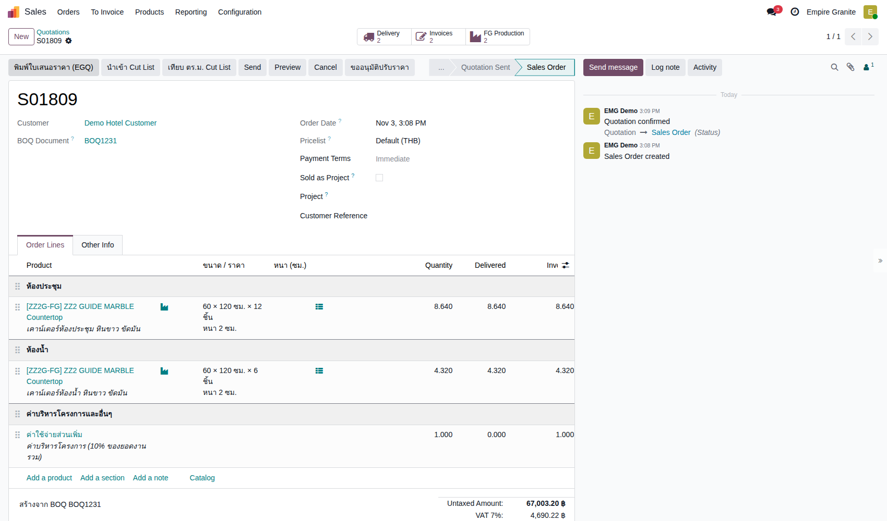 |
E. ลูกค้าคืนของ
รับ FG คืนเข้าคลัง · ออก Credit Note กลับรายได้และต้นทุนขาย · 2 test cases
| TC ID | Scenario | Precondition | Steps | ข้อมูลตัวอย่าง | Expected Result | Priority | ภาพหน้าจอ |
|---|---|---|---|---|---|---|---|
| TC-EX-15 | รับ FG คืนทั้งใบส่งของ (Return All) FG ที่รับคืนเข้า EG01/Stock (ที่เก็บ FG ตามปกติ) ไม่ผ่าน Returned - Inspect เหมือน Slab · กดปุ่มเล็ก Return ในหน้าต่าง Return โดยไม่ใส่จำนวนจะไม่เกิดใบรับคืน ต้องกด Return All หรือใส่จำนวนก่อน |
ส่งของ S01806 แล้ว (EG01/OUT/00775 Done) ออกใบแจ้งหนี้ INV/2026/00020 แล้ว (46,024.00 ก่อน VAT) |
|
คืน 7.200 ตร.ม. (ทั้งใบ) · lot FG-EG01/STFG/00491-01 | ได้ใบ EG01/IN/00748 รับจากลูกค้า Demo Hotel Customer ปลายทาง EG01/Stock จำนวน 7.200 · Validate แล้ว Done · lot FG-EG01/STFG/00491-01 กลับมา 7.200 ตร.ม. ใน EG01/Stock | High | 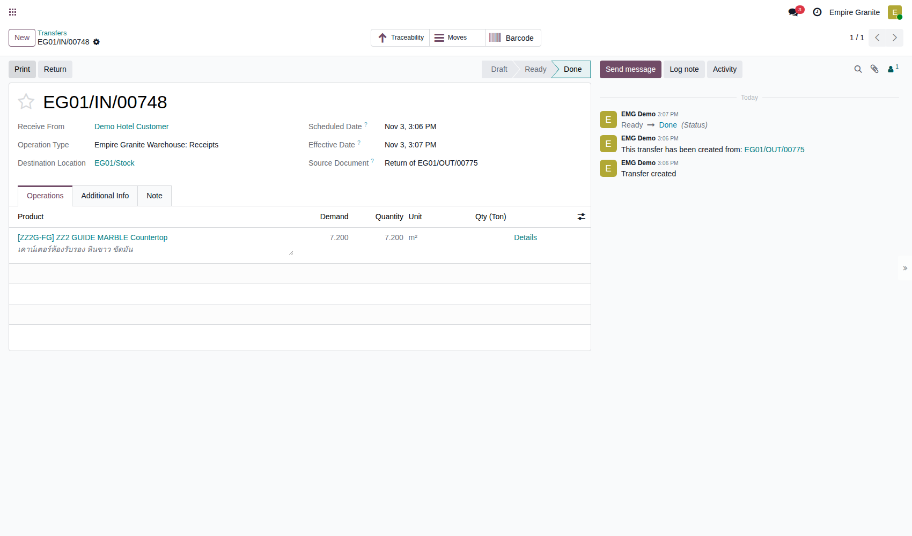 |
| TC-EX-16 | ออก Credit Note กลับรายการใบแจ้งหนี้ การคืนของไม่กลับใบแจ้งหนี้ให้เอง ต้องออก Credit Note แยก · Credit Note ย้อนทั้งรายได้และต้นทุนขาย (6,744.10) เพราะบัญชีต้นทุนลงตอนออกใบแจ้งหนี้ |
ทำ TC-EX-15 เสร็จแล้ว |
|
เหตุผล: เว้นว่าง · วันที่กลับรายการ: วันที่ปัจจุบัน | ได้ RINV/2026/00001 Posted ยอด 41,840.00 + ค่าบริหาร 4,184.00 · รวม VAT 49,245.68 เท่าใบแจ้งหนี้เดิม · สถานะ Paid (หักล้างกับใบเดิมอัตโนมัติ) · ใบ INV/2026/00020 เป็น reversed ยอดค้าง 0.00 · มีรายการต้นทุนขาย 6,744.10 กลับรายการด้วย | High | 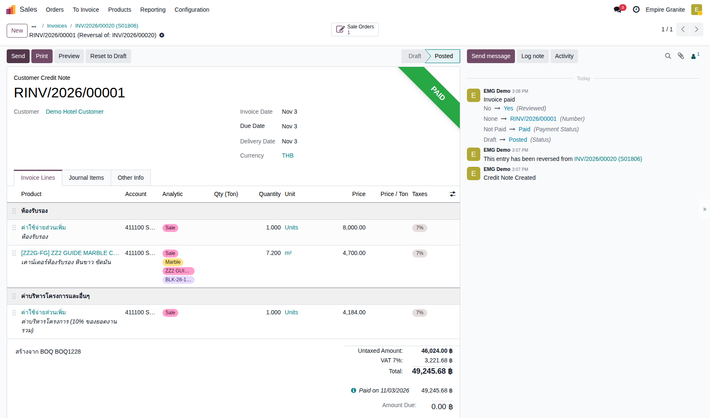 |